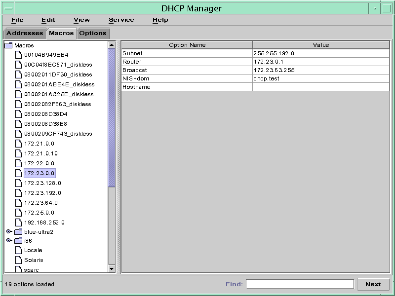

Previous
Previous
 How to Specify Network Interfaces for DHCP
Monitoring (dhcpconfig)
How to Specify Network Interfaces for DHCP
Monitoring (dhcpconfig)
Become superuser or assume a role or user name that is assigned to the DHCP Management profile.
For more information about the DHCP Management profile, see Setting Up User Access to DHCP Commands.
Roles contain authorizations and privileged commands. For more information about roles, see "Configuring RBAC (Task Map)" in System Administration Guide: Security Services.
Type the following command on the DHCP server system:
# /usr/sbin/dhcpconfig -P INTERFACES=int,int,...
int, int,... is a list of interfaces to monitor. The interface names must be separated by commas.
For example, you would use the following command to monitor only ge0 and ge1:
#/usr/sbin/dhcpconfig -P INTERFACES=ge0,ge1
Interfaces that you want to ignore should be omitted from the dhcpconfig command line.
The changes you make with this command persist across reboots.
Adding DHCP Networks
When you use DHCP Manager to configure the server, the first network is also configured at the same time. The first network is usually the local network on the server system's primary interface. If you want to configure additional networks, use the DHCP Network Wizard in DHCP Manager.
If you use the dhcpconfig -D command to configure the server, you must separately configure all networks that you want to use the DHCP service. See How to Add a DHCP Network (dhcpconfig) for more information.
The following figure shows the initial dialog box for the DHCP Network Wizard in DHCP Manager.
Figure 15-5 DHCP Manager's Network Wizard
When you configure a new network, DHCP Manager creates the following components:
A network table in the data store. The new network is shown in the network list within the Addresses tab of DHCP Manager.
A network macro that contains information needed by clients that reside on this network. The network macro's name matches the IP address of the network. The network macro is added to the dhcptab table in the data store.
How to Add a DHCP Network (DHCP Manager)
In DHCP Manager, click the Addresses tab.
Any networks already configured for DHCP service are listed.
See How to Start and Stop DHCP Manager for information about DHCP Manager.
Choose Network Wizard from the Edit menu.
Select options, or type requested information. Use the decisions that you made during the planning phase to determine what information to specify.
Planning is described in Planning DHCP Configuration of Your Remote Networks.
If you have difficulty with the wizard, click Help in the wizard window. Your web browser displays help for the DHCP Network Wizard.
Click Finish to complete the network configuration when you have finished specifying the requested information.
The Network Wizard creates an empty network table, which is listed in the left pane of the window.
The Network Wizard also creates a network macro whose name matches the IP address of the network.
(Optional) Select the Macros tab and select the network macro to view the macro's contents.
You can confirm that the information that you provided in the wizard has been inserted as values for options in the network macro.
See Also
You must add addresses for the network before the network's IP addresses can be managed under DHCP. See Adding IP Addresses to the DHCP Service for more information.
If you leave the network table empty, the DHCP server can still provide configuration information to clients. See Setting Up DHCP Clients to Receive Information Only (Task Map) for more information.
How to Add a DHCP Network (dhcpconfig)
Become superuser or assume a role or user name that is assigned to the DHCP Management profile.
For more information about the DHCP Management profile, see Setting Up User Access to DHCP Commands.
Roles contain authorizations and privileged commands. For more information about roles, see "Configuring RBAC (Task Map)" in System Administration Guide: Security Services.
Type the following command on the DHCP server system:
# /usr/sbin/dhcpconfig -N network-address
network-address is the IP address of the network you want to add to the DHCP service. See the dhcpconfig(1M) man page for suboptions you can use with the -N option.
If you do not use suboptions, dhcpconfig uses network files to obtain information about the network.
See Also
You must add addresses for the network before the network's IP addresses can be managed under DHCP. See Adding IP Addresses to the DHCP Service for more information.
If you leave the network table empty, the DHCP server can still provide configuration information to clients. See Setting Up DHCP Clients to Receive Information Only (Task Map) for more information.
Modifying DHCP Network Configurations
After you add a network to the DHCP service, you can modify the configuration information that you originally supplied. The configuration information is stored in the network macro used to pass information to clients on the network. You must modify the network macro to change the network configuration.
The following figure shows the Macros tab of DHCP Manager.
Figure 15-6 DHCP Manager's Macros Tab
How to Modify the Configuration of a DHCP
Network (DHCP Manager)
In DHCP Manager, select the Macros tab.
All macros that are defined for this DHCP server are listed in the left pane.
See How to Start and Stop DHCP Manager for information about DHCP Manager.
Select the network macro whose name matches the network configuration that you are changing.
The network macro name is the network IP address.
Choose Properties from the Edit menu.
The Macro Properties dialog box displays a table of the options included in the macro.
Select the option that you want to modify.
The option name and its value are displayed in text fields near the top of the dialog box.
(Optional) Modify the option name, or choose the Select button to display a list of option names.
The Select Option dialog box displays a list of all DHCP standard options, with a brief description of each option.
(Optional) Select an option name in the Select Option dialog box, and click OK.
The new option name is displayed in the Option Name field.
Type the new value for the option, and click Modify.
(Optional) You can also add options to the network macro by choosing Select in the dialog box.
See Modifying DHCP Macros for more general information about modifying macros.
Select Notify DHCP Server of Change, and click OK.
This selection tells the DHCP server to reread the dhcptab table to put the change into effect immediately after you click OK.